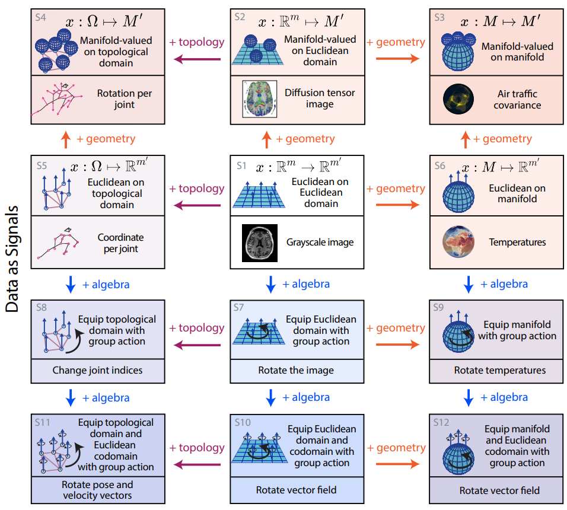

Equivariant neural networks · world models for robotics · neural radiance fields
I work on developing geometric architectures which use structure of the world — such as symmetries and compositionality — to build more efficient and generalizable learning systems. I am particularly interested in world models for robotics, equivariant neural networks, and neural (radiance) fields.
Structure of the world as an inductive bias
